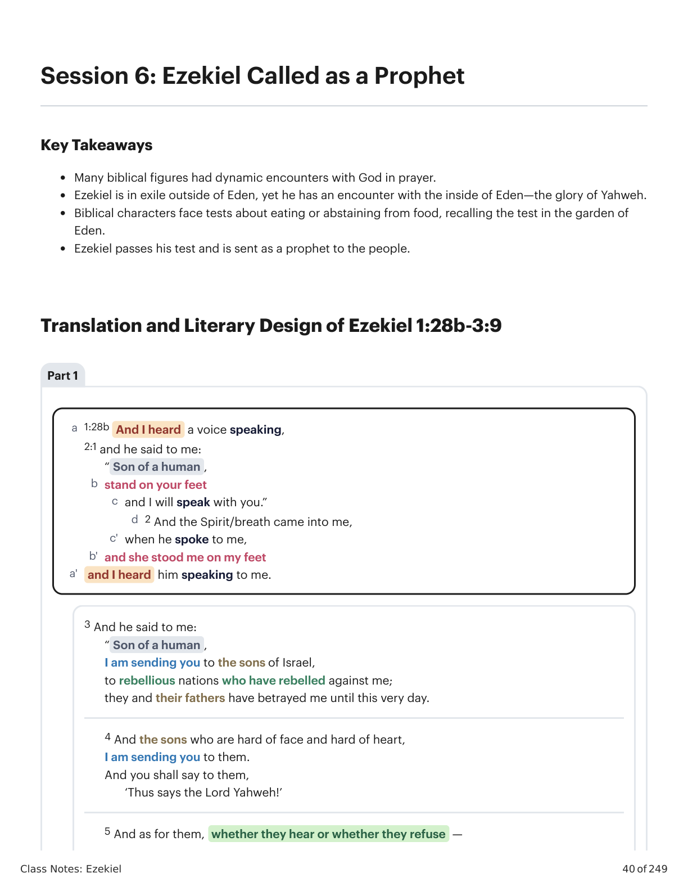
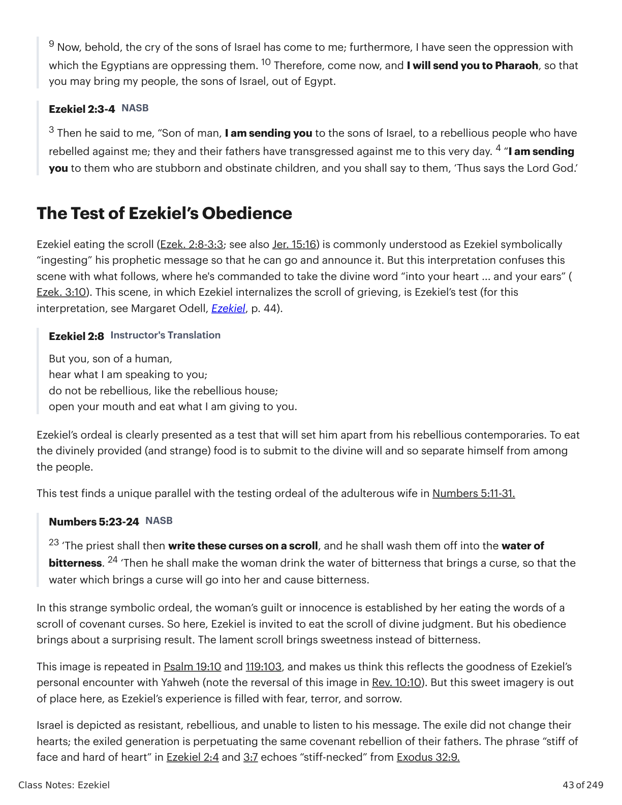
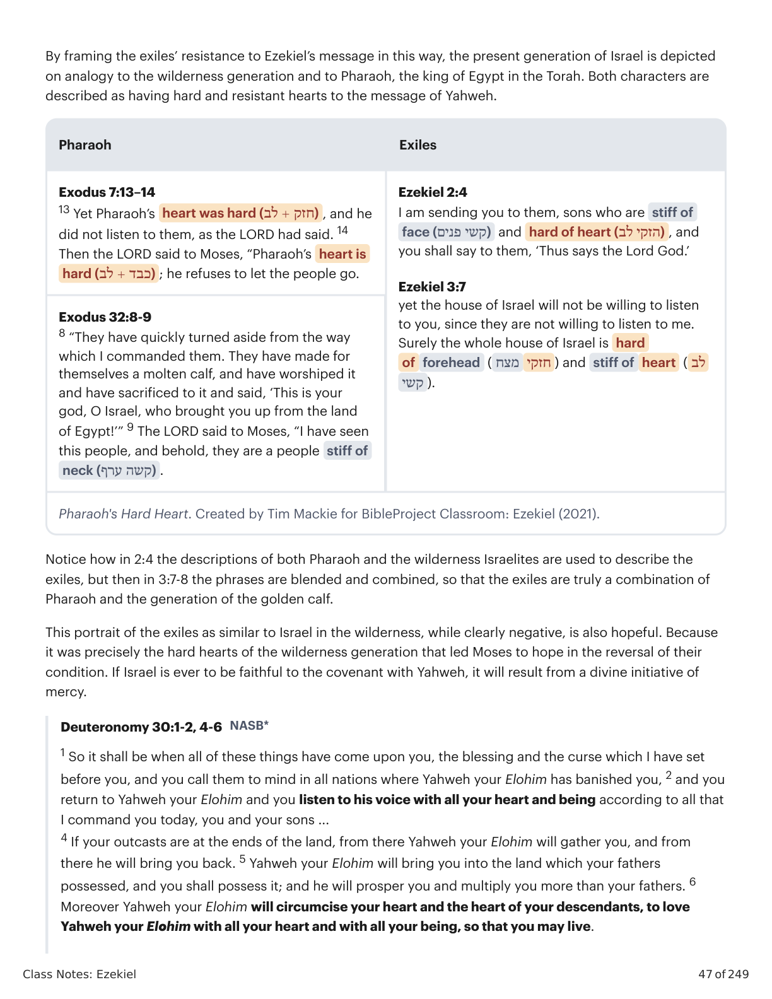

1:28b E ouvi uma voz que falava. 2:1 E ele me disse: "Filho de humano, põe-te em pé, e falarei contigo." 2 E o Espírito/vento entrou em mim quando ele falou comigo, e ela me pôs em pé, e ouvi-o falando comigo. 3 E ele me disse: "Filho de humano, estou te enviando aos filhos de Israel, a nações rebeldes que se rebelaram contra mim; eles e seus pais me traíram até hoje. 4 E aos filhos de rosto duro e coração duro, estou te enviando. E lhes dirás: 'Assim diz o Senhor Yahweh!' 5 E quanto a eles, ouçam ou recusem — porque são uma casa rebelde — então saberão que um profeta esteve no meio deles. 6 E quanto a ti, filho de humano, não temas deles, nem temas as suas palavras. 7 E falarás as minhas palavras a eles, ouçam ou recusem, porque são rebeldes. 8 Ora, tu, filho de humano, ouve o que te falo; não sejas rebelde como essa casa rebelde; abre a tua boca e come o que te dou." 9 Então olhei, e eis que uma mão se estendia para mim; e eis que nela havia um rolo. 10 E o estendeu diante de mim, e estava escrito na frente e no verso, e escrito nele estavam lamentações, pranto e ai. 3:1 E ele me disse: "Filho de humano, come o que achares; come este rolo, e vai, fala à casa de Israel." 2 E abri a minha boca, e ele me fez comer aquele rolo. 3 E disse-me: "Filho de humano, faze o teu ventre comer, e enche as tuas entranhas com este rolo que te dou." 4 E disse-me: "Filho de humano, vai à casa de Israel e fala-lhes as minhas palavras." 7 Mas a casa de Israel não quererá ouvir-te, visto que não querem ouvir-me a mim, porque toda a casa de Israel é de testa dura e coração obstinado. 8 Eis que fiz o teu rosto tão firme como o rosto deles, e a tua testa tão dura como a deles. 9 Como diamante mais duro que o sílex fiz a tua testa; não temas deles, nem te espantes diante deles, pois são uma casa rebelde."1:28b And I heard a voice speaking. 2:1 And he said to me: “Son of a human, stand on your feet and I will speak with you.” 2 And the Spirit/breath came into me when he spoke to me, and she stood me on my feet, and I heard him speaking to me. 3 And he said to me: “Son of a human, I am sending you to the sons of Israel, to rebellious nations who have rebelled against me; they and their fathers have betrayed me until this very day. 4 And the sons who are hard of face and hard of heart, I am sending you to them. And you shall say to them, ‘Thus says the Lord Yahweh!’ 5 And as for them, whether they hear or whether they refuse — because they are a rebellious house — then they will know that a prophet has been in their midst. 6 And as for you son of a human, do not be afraid of them, and do not be afraid of their words. 7 And you shall speak my words to them, whether they listen or whether they refuse, because they are rebellious. 8 Now you, son of a human, listen to what I am speaking to you; do not be rebellious like that rebellious house. Open your mouth and eat what I am giving you.” 9 Then I looked, and look: a hand was extended to me; and look, a scroll was in it. 10 And he spread it out before me, and it was written on the front and back, and written on it were lamentations, mourning and woe. 3:1 And he said to me, “Son of a human, eat what you find; eat this scroll, and go, speak to the house of Israel.” 2 And I opened my mouth, and he made me eat this scroll. 3 And he said to me, “Son of a human, make your stomach eat, and fill your innards with this scroll which I am giving you.” 4 And he said to me, “Son of a human, go to the house of Israel and speak with My words to them.” 7 But the house of Israel will not be willing to listen to you, since they are not willing to listen to me, because the whole house of Israel is strong of forehead and hard of heart. 8 Look, I have made your face as strong as their faces, and your forehead as hard as their foreheads. 9 Like diamond harder than flint I have made your forehead; do not be afraid of them, and do not be dismayed before them, for they are a rebellious house.”

Ezequiel Chamado para Falar a Israel Rebelde ao Comer o Rolo. Ilustração criada por Tim Mackie para BibleProject Classroom: Ezequiel (2021).Ezekiel Called To Speak to Rebellious Israel by Eating the Scroll. Illustration created by Tim Mackie for BibleProject Classroom: Ezekiel (2021).
Ezequiel comendo o rolo (Ezeq. 2:8-3:3; ver também Jer. 15:16) é comumente entendido como Ezequiel "ingerindo" simbolicamente sua mensagem profética para poder ir e anunciá-la. Mas essa interpretação confunde esta cena com o que se segue, onde ele é ordenado a tomar a palavra divina "no teu coração ... e teus ouvidos" (Ezeq. 3:10). Esta cena, em que Ezequiel internaliza o rolo de luto, é o teste de Ezequiel (para essa interpretação, ver Margaret Odell, Ezekiel, p. 44). A ordem de Ezequiel 2:8 é claramente apresentada como um teste que o separará de seus contemporâneos rebeldes. Comer o alimento divinamente provido (e estranho) é submeter-se à vontade divina e assim separar-se do meio do povo. Esse teste encontra um paralelo único com a provação da esposa adúltera em Números 5:11-31: nela, a culpa ou a inocência da mulher é estabelecida por ela comer as palavras de um rolo de maldições da aliança. Assim, aqui Ezequiel é convidado a comer o rolo do juízo divino. Mas sua obediência traz um resultado surpreendente: o rolo de lamentação traz doçura em vez de amargura.Ezekiel eating the scroll (Ezek. 2:8-3:3; see also Jer. 15:16) is commonly understood as Ezekiel symbolically “ingesting” his prophetic message so that he can go and announce it. But this interpretation confuses this scene with what follows, where he's commanded to take the divine word “into your heart ... and your ears” (Ezek. 3:10). This scene, in which Ezekiel internalizes the scroll of grieving, is Ezekiel’s test (for this interpretation, see Margaret Odell, Ezekiel, p. 44). Ezekiel 2:8 is clearly presented as a test that will set him apart from his rebellious contemporaries. To eat the divinely provided (and strange) food is to submit to the divine will and so separate himself from among the people. This test finds a unique parallel with the testing ordeal of the adulterous wife in Numbers 5:11-31: in that strange symbolic ordeal, the woman’s guilt or innocence is established by her eating the words of a scroll of covenant curses. So here, Ezekiel is invited to eat the scroll of divine judgment. But his obedience brings about a surprising result. The lament scroll brings sweetness instead of bitterness.

"Bendito seja" vs. "Quando ele se elevou" em hebraico paleo. Criado por Tim Mackie para BibleProject Classroom: Ezequiel (2021)."Blessed Be" vs. "When It Rose Up" in Paleo Hebrew. Created by Tim Mackie for BibleProject Classroom: Ezekiel (2021).
A glória de Yahweh aparece fora do templo de Jerusalém, perto de um campo de escravos na Babilônia (!). Duas implicações: (1) Yahweh abandonou efetivamente Jerusalém e seu templo; (2) a presença gloriosa de Yahweh pode estar com seu povo em qualquer lugar, porque, como a visão deixa claro simbolicamente, todo o cosmos é o templo de Yahweh. Yahweh foi para o exílio com seu povo, e escolheu se revelar a um remanescente ali, do qual ele "ressuscitará" (como em Ezeq. 37) um povo da aliança renovado. Yahweh declara que é entre os exilados arrependidos que se tornou "um santuário temporário/pequeno" (ver Ezeq. 11:16). Deus não está mais preso à terra de Israel ou ao seu templo. Onde ele estiver, o templo está com ele. Os contemporâneos de Ezequiel resistem à sua mensagem, e o problema é o seu coração endurecido (Ezeq. 2:3-4, 3:7). Esta primeira descrição da fonte da rebelião de Israel é a chave para a mensagem do livro.Yahweh’s glory appears outside the Jerusalem temple, near a slave camp in Babylon (!). Two implications: (1) Yahweh has effectively abandoned Jerusalem and its temple; (2) Yahweh’s glorious presence can be with his people anywhere because, as the vision makes symbolically clear, the entire cosmos is the temple of Yahweh. Yahweh has gone into exile with his people, and he has chosen to reveal himself to a remnant there, from which he will “resurrect” (as in Ezek. 37) a renewed covenant people. Yahweh declares that it is among the repentant exiles that he has become “a temporary/little sanctuary” (see Ezek. 11:16). God is no longer bound to the land of Israel or to its temple. Wherever he is, the temple is with him. Ezekiel’s contemporaries resist his message, and the problem is their hard hearts (Ezek. 2:3-4, 3:7). This first description of the source of Israel’s rebellion is key to the message of the book.

O Éden de Ezequiel no Exílio. Ilustração criada por Tim Mackie para BibleProject Classroom: Ezequiel (2021).Ezekiel’s Eden in Exile. Illustration created by Tim Mackie for BibleProject Classroom: Ezekiel (2021).
Que papel você acha que a oração e as Escrituras desempenham na vida do povo de Deus? Você as vê como meios de encontrar a Deus? Por quê ou por que não?What role do you think prayer and Scripture play in the lives of God's people? Do you see them as means of encountering God? Why or why not?